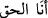

günahlarda ısrar etmemektir. Çünkü, günahlar belâ ve sıkıntılara sebep olur. Her zulmet,
ancak nefs-i emmârenin karanlıklarından kaynaklanır.
Nitekim Mesnevî’de şöyle denilmiştir:
Gam ve kasvetten ne gelirse sana
Bil ki utanmazlık ve küstahlıktandır
Sâib de şöyle der:
Başkasından niçin şikâyet edeyim? Çünkü köpük gibi
Daima hevâsının peşinde koşan bir zavallıyım ben
63. âyet-i kerîmede vârid olan “kara” cisimlere, “deniz” ise ruhlara işaret eder. Her
ne kadar ruhlar cisimlere nazaran nûrânî olsalar da Cenab-ı Hakk’a ve ulûhiyyetinin
nûruna nisbetle karanlıktırlar. Nitekim Rasûlullah (s.a.) şöyle buyurmuşlardır: “Allah
mahlûkatı bir karanlık içinde yarattı, sonra da onların üzerine nurundan saçtı.”[124]
Âyetin mânâsı şöyledir: “Sizi yaratılış karanlığında var ettiğimde beşeriyet karasının
karanlığından ve ruhâniyet denizinin zulmetinden kim kurtarıyor? Halbuki o zaman
cismâniyetle açıktan ve ruh ile gizlice: “Eğer bizi bundan kurtarırsa elbette
şükredenlerden olacağız.” diye O’na yalvarıp yakarırsanız. De ki: “Ondan ve bütün
sıkıntılardan Allah sizi kurtarıyor. Sonra” O’nun yüce sıfatlarının nurlarından bir nur
size tecellî edince “siz yine O’na ortak koşuyorsunuz!”
Bazınız ortak koşuyor ve “
” “Ben Hakk’ım diyor. Bazınız da: “Zatımı tesbih
ederim, benim şânım ne yücedir” diyor. “De ki” “siz “Ben Hakk’ım”, “Zatımı tesbih
ederim” dediğiniz zaman “O, sizin üstünüzden bir azab göndermeye” izzeti ve gayreti
sebebiyle zâtı ile sizin aranıza bir perde salarak size onunla azab etmeye “kadirdir.”
“Yahut ayaklarınızın altından bir azab göndermeye” Beşeri vasıflarınızla sizi
perdelemeye, heva ve hevesinizin bütün benliğinizi kaplamasıyla sizi bir ziyana
uğratmaya, böylece size azab etmeye “kadirdir.”
“Ya da sizi parti parti birbirinize düşürüp” Sizin hakkınızda halkı farklı fırkalara
ayırabilir. Bir kısmı sizin için: “Onlar sıddîklardır” derler, diğerleri ise “Zındıklardır.”
diyerek itham ederler.
Hallac-ı Mansûr’a yapıldığı gibi öldürmek, idam etmek ve kesip parçalamak sûretiyle
“kiminize kiminizin hıncını tattırmaya kadirdir.”
Dediler ki, Halife Muktedir’in veziri Hâmid b. Abbas’ın meclisinde Hallac bir söz
söyledi. Orada bulunan kadı Ebu Ömer, Hallac’ın kanının dökülmesinin helâl olduğuna
fetva verdi ve bunu kendi eliyle yazıya döktü. O meclisde bulunan fakihler de onunla